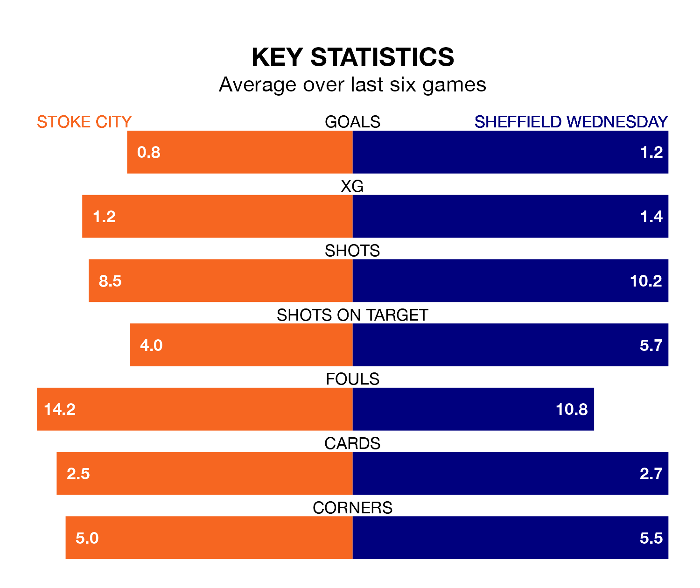

Struggling Sheffield Wednesday face Stoke City away at the bet365 Stadium on Saturday looking to build on a win in their last league outing.
After securing all three points with a 3-1 victory over Blackburn Rovers on December 2, the Owls sit bottom of the Championship.
They travel to play a Stoke side 20th in the standings, who lost in their last match, 2-1 against Plymouth Argyle.
Stoke are in disappointing form in the Championship, with one win and two draws from their last six games.
With two wins and a draw over that period, Wednesday's form is slightly better – they have taken seven points from 18, compared to City's five.
In the last five years, Stoke and Wednesday have played each other on five occasions. Stoke won two of them, Wednesday one, and they drew twice.
On average, the Potters scored 0.8 goals and the Owls 0.6 in those matches.
Their last meeting was on February 16 2021, when Stoke won 1-0 at home.
With 12 goals in 19 games so far this season, the Owls are the league's lowest scorers with 0.6 goals per game. And they are conceding more than average, letting in 31 goals at a rate of 1.6 per game.
The Potters are also below average scorers, with 1.0 goal per game, compared to a league average of 1.4. They have conceded 1.4 goals per game.
